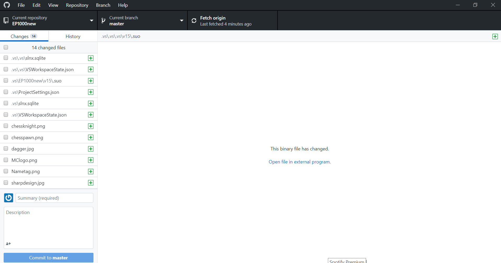
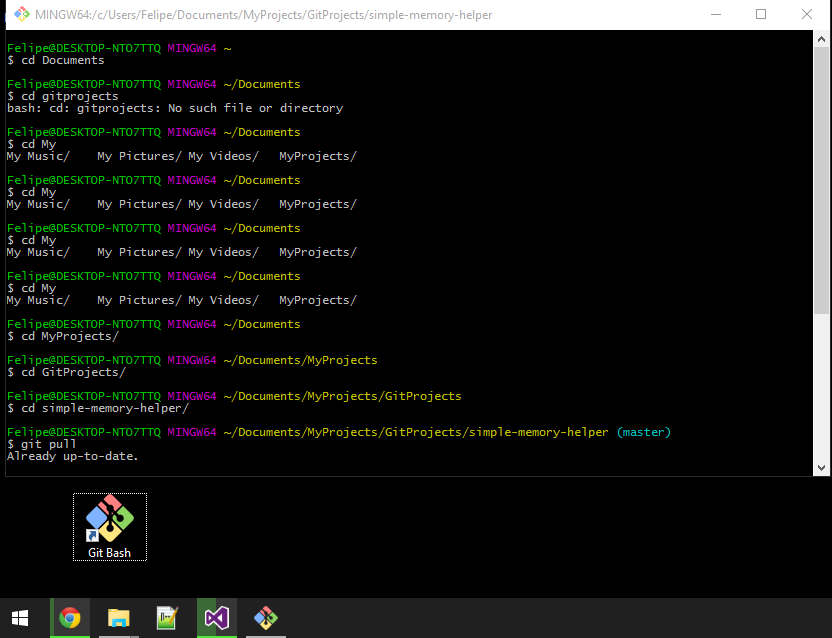

Version Control
Lesson Dates: 4 May
Things Covered: Version Control
Version Control System (VCS) is a software which keeps track of code in a special kind of database.
It allows many developers to work on a code, check the history of a code, trace of the origin of the code and edit the code all
at the same time. There are many softwares that can be used for version control such as Fossil, GNU arch, Mercurial, etc.
However, Git is by far the most popular, open source and distributed VCS.
Reasons for version control
How does VCS work?

Basic Git Commands
- Git Clone ($ git clone [url]): Clone (download) a repository that already exists on GitHub, including all of the files, branches, and commits.
- Git Init ($ git init): Turn an existing directory into a git repository
- Git Pull ($ git pull): Updates your current local working branch with all new commits from the corresponding remote branch on GitHub. git pull is a combination of git fetch and git merge.
- Git Push ($ git push): Uploads all local branch commits to GitHub
- Git Add ($ git add [file]): Snapshots the file in preparation for versioning.
- Git Commit ($ git commit -m "[descriptive message]"): Records file snapshots permanently in version history
Ways to keep track of your work using Git:
- Github Desktop
- Command-line (Git Bash)
GitHub Desktop

How to use GitHub Desktop:
Step 1: Download GitHub Desktop here.
Step 2: Login into GitHub Desktop. Use the login details of your current GitHub account.
Creating new repositry: In the Menu bar of the page, Add new repositry, set the directory of your repository
and set it to Master Branch. Initialise your repository with a README. Your repository will be initialised in your Local and Remote Branch.
To update repository: Make changes in the Staging Area (i.e your web editor) and save it. Go to GitHub Desktop and your
changes will be seen with a ✓ on the left bar of the page. On the bottom left of the page, Commit to master, then
Push to Origin.
Command-line using Git Bash

Step 1: Download Git Bash here.
Step 2: Configure your Git Bash.
Command-line tutorials/resources:
- Command-line cheat sheet.
- How to use the Command Line | Terminal Basics for Beginners.
- GitHub Desktop Quick Intro For Windows.